the first doll i ever recieved. i ordered her after rio but she arrived first. dealing with bambicrony is a much more pleasant experience than DOD
my mom had opened her box before me and then sealed her back up before i got back from school. i was pissed when i found the photos on my camera! i'm posting here the ones i took myself, which happen to be blurry, as she expected
my friend rei had a tan bambicrony girl (maybe kumi?) that i had seen at a meetup a couple months (weeks probably tbh) before! i thought she was just adorable so when tan charity came up, i bought one!
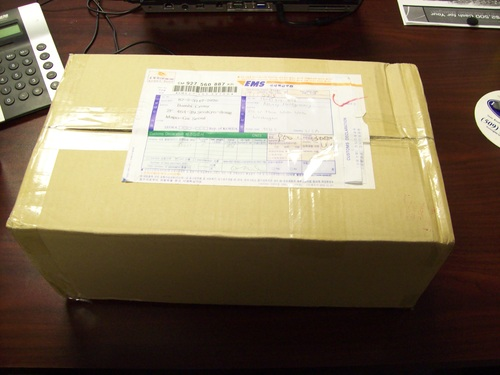 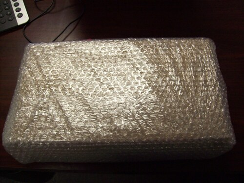 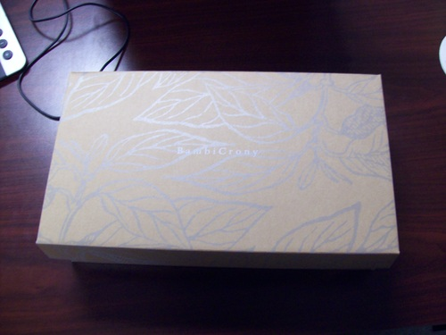 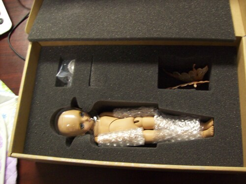 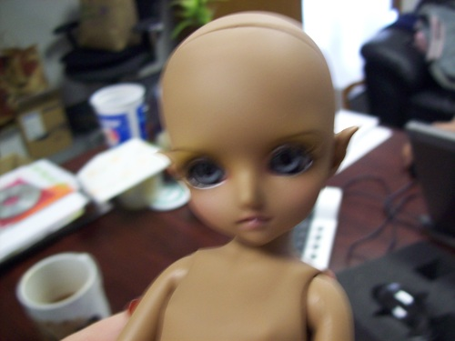 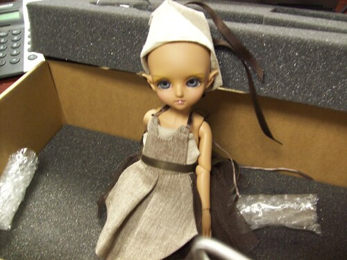she is my mom's (technically)
a woman on the marketplace had her up for a while, saying that she needed money for medical reasons. she was listed for at leasy $300 or so, but i didnt have a ton of money at the time. i politely offered her $200 or so, saying i understood if that was way too low. she accepted though. i hope shes alright out there. i feel bad i couldnt offer her more at the time.
so the twin came to us. i opened her because my mom got to open my first doll before me.
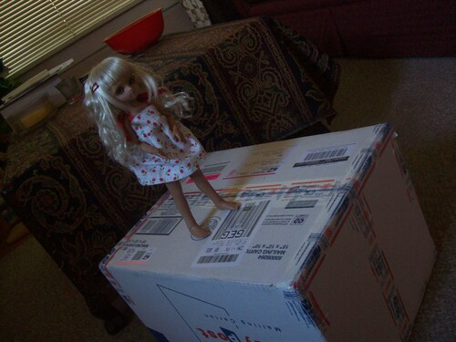 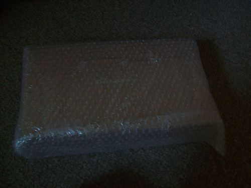 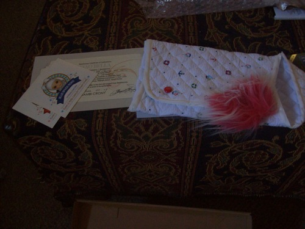 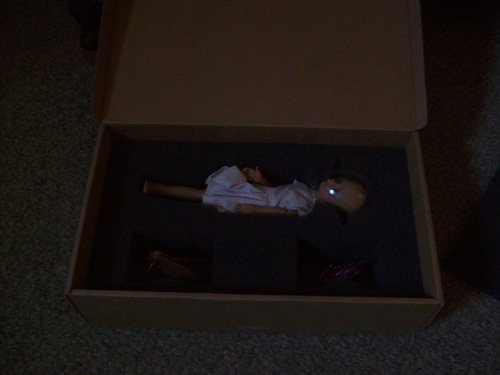 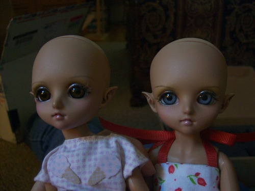 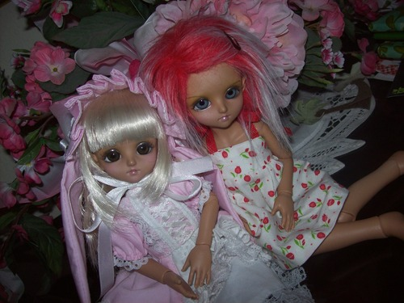their faceups are slightly different, but still very similar. i think olivia looks more spunky, and sophie more sweet.
my big issue with bambicrony girls is that theyre smaller and thinner than yosd sized dolls, so most yo clothes and wigs dont fit! very annoying! it makes me not want to shop for them at all since they cant share with my unoa or my littlefee
every time i see another tan elf charity pop up i have to remind myself i dont need triplets